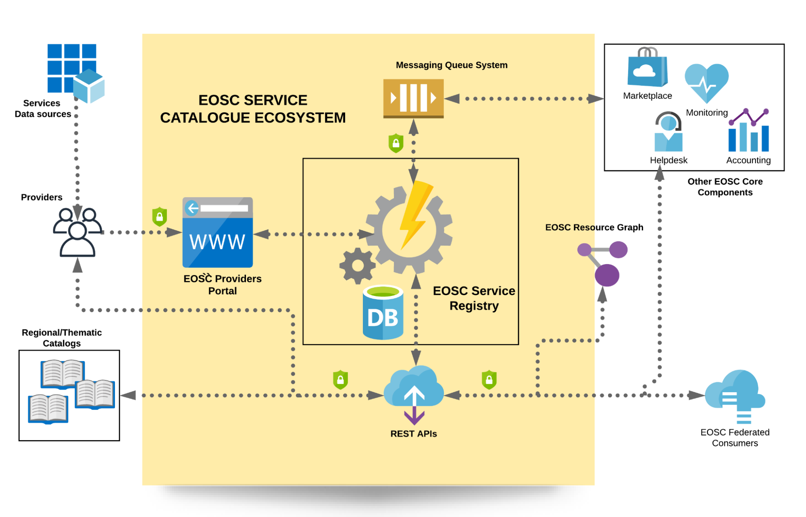

<div class="uk-section-default uk-section uk-section-small uk-padding-remove-bottom" style="min-height: 325px">
  <div class="uk-container uk-container-large">
    <div class="uk-grid-margin uk-grid uk-grid-stack" uk-grid="">
      <div class="uk-width-1-1@m uk-first-column">
        <div class="uk-container uk-container-large uk-margin-medium-top uk-margin-medium-bottom">
          <div class="uk-grid">
            <div class=" uk-width-expand@m">
              <div>

                <div id="service-catalogue" class="section uk-margin-bottom">
                  <h2>The EOSC Service Catalogue</h2>

                  <p><strong>EOSC Service Catalogue</strong> is a key component of the EOSC Resource Catalogue. It provides both data and
                    functionality to register, maintain, administer and share services, datasources and catalogues
                    onboarded by various providers. Moreover, it’s the point of reference for all EOSC Future components
                    that provide added value to this information and help in making all this data and services
                    searchable and accessible using various tools, both for researchers and end users.</p>

                  <p>The types of EOSC resources contained in the Service Catalogue include:</p>
                  <ul>
                    <li>Providers,</li>
                    <li>Services (Data Sources as an explicit subtype) and</li>
                    <li>third party/regional Catalogues.</li>
                  </ul>

                  <p>The EOSC Service Catalogue consists of two main components:</p>

                  <p><strong>EOSC Providers Portal</strong>: the portal enables the <strong>front-end</strong> functionality for the registration of EOSC
                    Providers, organisations entitled to publish their resources via the EOSC Catalogue, and offers them
                    capabilities to onboard and manage EOSC resources. It also offers the Provider dashboard, where
                    representatives from provider organisations have a detailed view on their offerings in the EOSC
                    portal as well as various usage statistics on their resources. Finally, it offers to members of the
                    onboarding team of the EOSC portal the functionality to manage the EOSC portal catalogue entries,
                    i.e., manage the onboarding process of providers that apply to list their resources in the portal,
                    audit on the onboarded resources, etc.</p>

                  <p><strong>EOSC Service Registry</strong>: the component offers the <strong>underlying storage functionality</strong> and the
                    interoperability tools for the programmatic access, registration, manage (CRUD) of providers,
                    services, and catalogues. It also offers the <strong>necessary API</strong> functionality for the interoperability of
                    service catalogues from individual providers or aggregators (e.g., thematic, or regional catalogues)
                    with the EOSC portal.</p>

                  
                  <span class="uk-flex uk-flex-middle uk-flex-center">EOSC Service Catalogue architecture</span>


                </div>

                <div id="onboarding-and-management" class="section uk-margin-top uk-margin-bottom">
                  <h2>Provider/Resource onboarding and management</h2>

                  <p>EOSC Service Catalogue offers two interfaces to enable onboarding and management of providers and services/datasources:</p>
                  <ul>
                    <li>the EOSC Service Catalogue REST APIs and</li>
                    <li>the EOSC Providers Portal Component: a web portal that offers a simple UI to interact with the EOSC Service Catalogue.</li>
                  </ul>

                  <p>In a nutshell, functionality offered includes:</p>
                  <ul>
                    <li>For providers</li>
                    <ul>
                      <li>Onboarding</li>
                      <li>Management of resources</li>
                      <li>Live usage statistics from the EOSC Providers Portal</li>
                      <li>Email notifications</li>
                      <li>Interaction with EPOT team</li>
                    </ul>
                    <li>For EPOT team members and Administrator</li>
                      <ul>
                        <li>Onboarding management</li>
                        <li>Auditing and Catalogue management</li>
                        <li>Email digest and interaction with providers</li>
                      </ul>
                    <li>For other users (funders, EOSC profiles management (vocabularies, schema, etc.)</li>
                    <ul>
                      <li>Statistics</li>
                    </ul>
                  </ul>
                </div>

                <div id="onboarding-and-management-api" class="section uk-margin-top uk-margin-bottom">
                  <h2>Resource catalogues onboarding and management using REST API</h2>

                  <p>This functionality facilitates the onboarding of entire collections or Catalogues of resources
                    maintained by another organisation or provider. These catalogues could include resources that share
                    a common subject (thematic catalogues) or resources that come from a specific geographical region or
                    consortium/fellowship (regional catalogues). There are two key issues that distinguish resource
                    catalogues registration from a simple resource registration as already described above:</p>
                  <ul>
                    <li>A service or resource can participate in more than one catalogues</li>
                    <li>A catalogue should be able to synchronise data with the EOSC Resource catalogue (vice and versa)</li>
                  </ul>

                  <p>The procedure of onboarding catalogues to EOSC Service Catalogue follows the following general steps:</p>
                  <ul>
                    <li>Register catalogue</li>
                    <li>Catalogue reviewed and approved</li>
                    <li>Catalogue Owner starts pushing services and providers (using REST API)</li>
                  </ul>

                  <p>In general, catalogues are added after initial approval, and EOSC Service Catalogue does the
                    housekeeping on the “who-on-who” (which services/providers are on which catalogue). Catalogue
                    providers can trigger updates through the REST API . In the general case, all REST API calls from
                    the previous use case could be used for managing a catalogue as another case of EOSC Resource
                    Catalogue resource.
                    Again, EOSC Service Catalogue (as part of the EOSC Resource Catalogue) offers a REST API interface
                    to enable onboarding and management of providers and resources from third party catalogues: the EOSC
                    Service Catalogue REST APIs
                  </p>
                </div>

                <div id="integration" class="section uk-margin-top uk-margin-bottom">
                  <h2>Integration with other EOSC Future components – Marketplace, Monitoring, Helpdesk, etc</h2>

                  <p>The EOSC Service Catalogue uses a JMS messaging subsystem in order to facilitate a loose coupling
                    communication with Marketplace. But there are also REST APIs used for other EOSC Core components to
                    integrate with the EOSC Service Registry.</p>
                </div>

                <div id="implementations" class="section uk-margin-top uk-margin-bottom">
                  <h2>Implementations</h2>

                  <p>Running installations that implement the described functionality regarding REST APIs can be found at:</p>

                  <ul>
                    <li>EOSC Provider entry point: <a href="https://providers.eosc-portal.eu/">https://providers.eosc-portal.eu/</a></li>
                    <li>EOSC Provider Sandbox: <a href="https://sandbox.providers.eosc-portal.eu/">https://sandbox.providers.eosc-portal.eu/</a></li>
                    <li>EOSC Provider Beta: <a href="https://beta.providers.eosc-portal.eu/">https://beta.providers.eosc-portal.eu/</a></li>
                    <li>EOSC portal API: <a href="https://providers.eosc-portal.eu/openapi">https://providers.eosc-portal.eu/openapi</a></li>
                    <li><strong>EOSC API base URL:</strong> <a href="https://api.eosc-portal.eu/">https://api.eosc-portal.eu/</a></li>
                  </ul>

                  <p>API documentation is here: <a href="../developers">https://providers.eosc-portal.eu/developers</a></p>

                  <p>Last but not least, source code resides at GitHub and can be reviewed by anyone interested in it
                    <a href="https://github.com/madgeek-arc/resource-catalogue">https://github.com/madgeek-arc/resource-catalogue</a>
                  </p>

                </div>

              </div>
            </div>
          </div>
        </div>
      </div>
    </div>
  </div>
</div>
